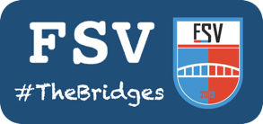

Herzlich Wilkommen beim FSV Vorhop Schönewörde e.V.

Wir fusionierten 2019 die Fußballabteilungen vom
VFL Vorhop
und
TSV Schönewörde
zum
FSV Vorhop-Schönewörde. Die Brücke über den Elbe-Seitenkanal verbindet die beiden Dörfer miteinander.
Deshalb haben wir genau diese als Wappen gewählt.
Man nennt uns auch „The Bridges“.
Der FSV Vorhop-Schönewörde stellt derzeit diverse Mannschaften im Jugend- und Erwachsenbereich. Informationen über die Sparte Fussball bekommen Sie über die Spartenleitung.
Kontaktdaten:
Stefan Müller
Tel.: 0175/8166272
Mail: stefan5.mueller@t-online.de
Weitere Infos erhalten Sie dazu in den sozialen Netzwerken.
FSV Vorhop-Schönewörde. Die Brücke über den Elbe-Seitenkanal verbindet die beiden Dörfer miteinander.
Deshalb haben wir genau diese als Wappen gewählt.
Man nennt uns auch „The Bridges“.
Der FSV Vorhop-Schönewörde stellt derzeit diverse Mannschaften im Jugend- und Erwachsenbereich. Informationen über die Sparte Fussball bekommen Sie über die Spartenleitung.
Kontaktdaten:
Stefan Müller
Tel.: 0175/8166272
Mail: stefan5.mueller@t-online.de
Weitere Infos erhalten Sie dazu in den sozialen Netzwerken.